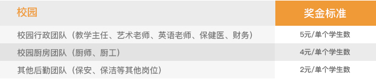
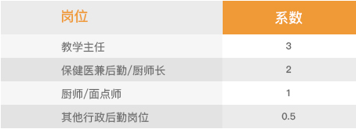
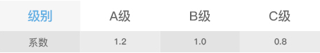

-
行政后勤奖金相关参数
Relevant Parameters Of Administrative Logistics Bonus
行政后勤人员月绩效考核
MONTHLY PERFORMANCE APPRAISAL OF ADMINISTRATIVE STAFF
行政后勤人员月绩效考核
1、园长根据检查评分表，对教学主任每月完成4次检查评分，对保健医每月完成10次检查评分，对厨房每月完成10次检查评分；
2、保健医根据检查评分表，每月完成10次的厨师、厨工、保安、保洁的检查评分，每月完成10次的厨房检查评分；
3、根据绩效考核工具的考核结果，每月进行全国排序(北大公学直营园)或者本校排名（北大公学加盟园）；排名前1/3为A级、排名中间1/3为B级，排名最后1/3为C级；
A级教学主任、A级保健医、A级出纳、A级厨房；
B级教学主任、B级保健医、B级出纳、B级厨房；
C级教学主任、C级保健医、C级出纳、C级厨房
4、特色老师、厨师、厨工、保安、保洁合并在校园内部进行排序，排名前1/3的为A级；排名中间1/3的为B级，排名后1/3的为C级；
行政后勤人员月奖金计算 奖金 = 个人奖金 + 校园奖金分享
MONTHLY BONUS CALCULATION FOR ADMINISTRATIVE STAFF
个人奖金计算
1、中层管理个人奖金计算按照考核结果进行分配；
如表格所示：加盟园园长可自主设置

校园奖金计算
1、校园奖金分享=奖金标准*月平均出勤孩子数量/同岗位员工人数*岗位系数*校园级别系数（只有直营园有校园级别系数，加盟园可不需要）
2、奖金标准：如图所示，加盟园园长可自主设置

3、岗位系数：如图

3、岗位系数：如图
